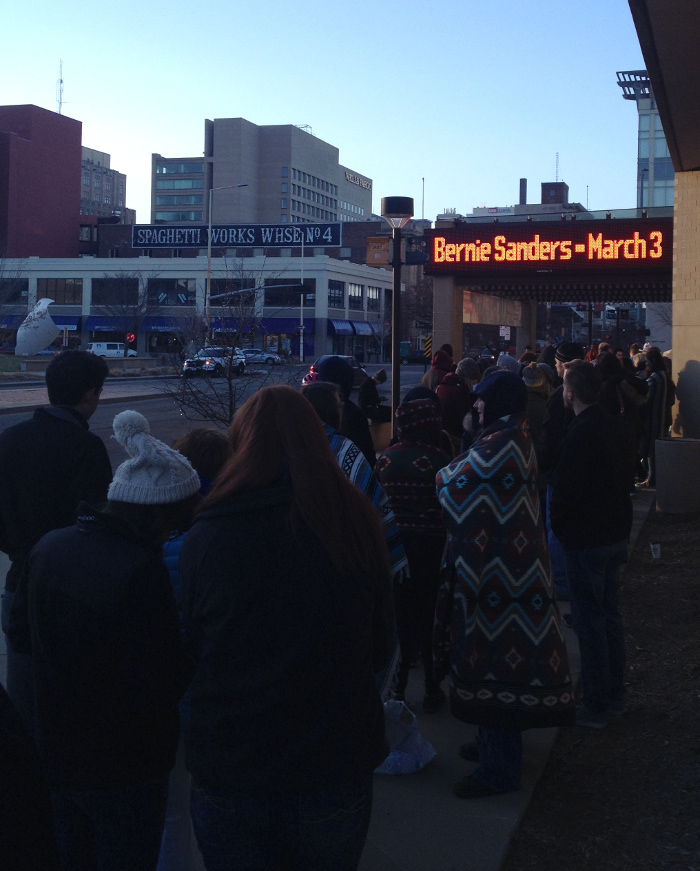
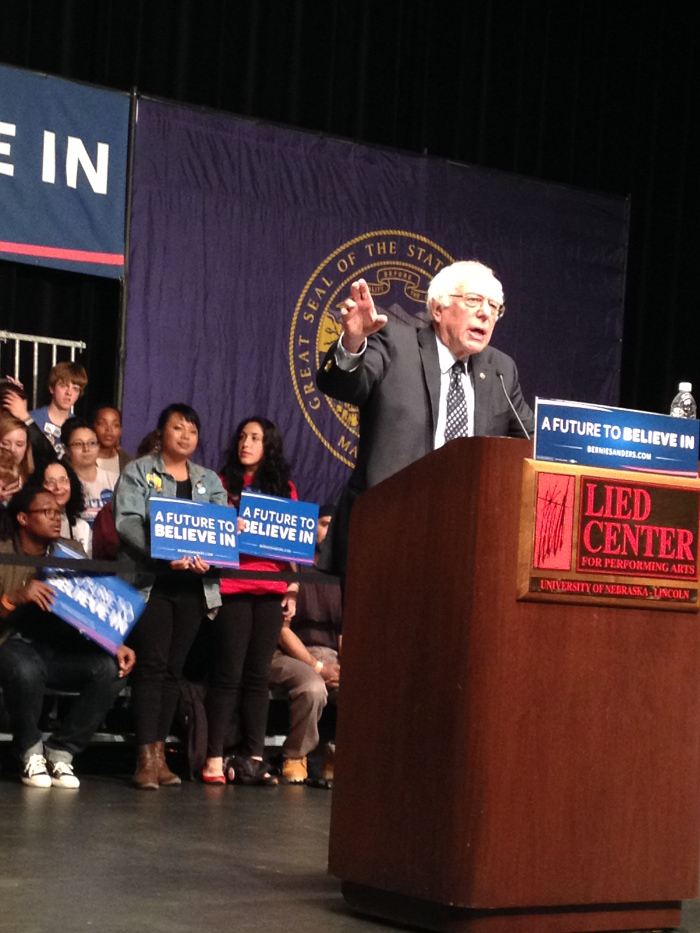
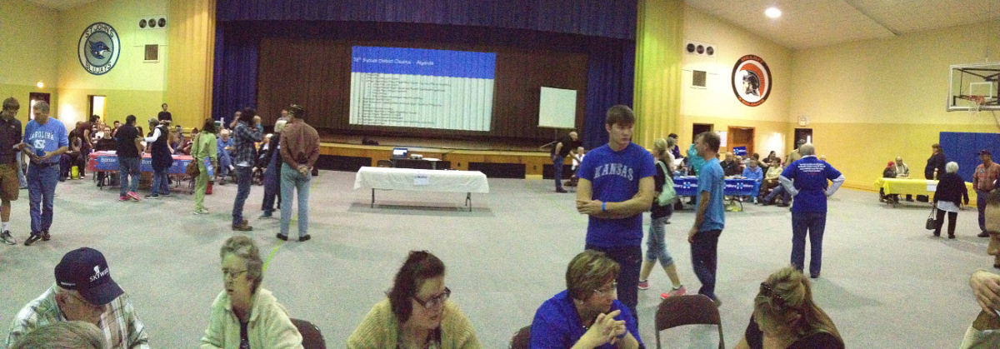
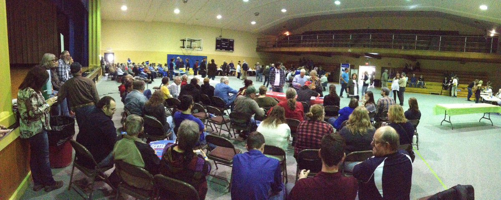

I don't want to be political on my blog, but I thought it would be interesting to write about my first caucus experience. I'm not trying to sway voters or anything with this post, I just talk about the interesting experience. It wasn't anything like I had expected and this is a true and non-exaggerated account. I also feel like I need a disclaimer for the poor quality of my iPhone 4s photos!
Days before Kansas and Nebraska caucused, I attended a Bernie Sanders rally in Lincoln. I stood in line at 7:30 am in the freezing cold until they let us in at 11:30. I was actually able to nab a front row seat because I came alone, and I think Bernie even looked at me very briefly while speaking! (I have also made eye contact with Charles Koch, so my list of famous people I have made eye contact with now includes two people but is very diverse.)

I had volunteered a bit with the campaign in Lincoln so they had my cell number, and the night before the rally I had received a text asking if I wanted to sit on stage behind Bernie. I replied too late and didn't receive a response, however.
I probably have permanent nerve damage in my feet from standing outside for 4.5 hours in 35 degree weather in canvas shoes, and I skipped an algorithms quiz, and I took off work, but it was totally worth it. He gave a really good speech and even talked about issues specific to Nebraska, which I thought was pretty cool.
Even though I could caucus in Lincoln where I attend college, I decided to go back to Kansas to caucus because I was able to give someone a ride who had wanted to go, but otherwise might not have. The caucus location was 2 hours away from my parents' house, because it was for 14 counties worth of people. There aren't many democrats in Kansas though. I was able to conveniently change my party affiliation online ahead of time.
We got to the caucus an hour early because the person who had made the trip with me needed to register to vote, and I didn't know how long the lines would be. There were already people sitting on their sides, and it looked like there were more people on the Bernie Sanders side.

I had read online that Hillary and Bernie supporters demographically were very different, but I didn't realize how true that was until I got to the caucus. The supporters on the Bernie side were a diverse mix of young and old, while the crowd on the Hillary side was mostly older. I talked to some interesting people while waiting for the caucus to begin and it was really cool to hear about different viewpoints of fellow Kansans, especially since I grew up in a very homogenous small town.
Then the actual caucus started and they counted 266 people in attendance. There were a bunch of speeches. During the speeches, caucus volunteers handed out caucus commit cards and told us to fill them out. I knew these cards didn't count for an actual vote, but I thought that maybe the campaign just wanted to collect information about who was there.
While lining up to vote, we had to sign a piece of paper with our name. However, for some reason, at our precinct we had to write our name on two separate pieces of paper, while only one of them counted as our vote. Our side wasn't told about this, while the Hillary side was. Many of the people in the front of the line signed the wrong piece of paper and left, so their vote didn't count. I had heard about this while still standing in line to vote. (Later, I heard that at other caucuses in Kansas, they only had to sign one sheet of paper.)
Some voters on our side were then told that if they handed in their wristband and caucus commit card, their vote would count. It didn't. By the time the time that we realized what was going on, many voters had already left. I was in the back of the huge line to sign my name so I didn't realize what was going on until there was a big argument about it.
In the end, our side had 147 votes while the other side had 106. The delegates were split 3-3. If we had even a few more votes, the delegates would have been split 4-2. We were several votes short of the initial count of caucus attendees
I got in contact with a few numbers of employees of the Bernie Sanders campaign and called a hotline, however the caucus captains had already signed the paperwork so the votes were final.
Later in the evening, someone I know on Facebook who I had seen at the caucus updated me and told me that they corrected the delegates to be 4-2 instead of 3-3. She also told me that while signing in, the guy in charge told us we couldn't sign our name on the paper yet, but the other side had been letting people sign their name right when they arrived. So when the crowd of people on the Bernie side were signing their name on the paper, it was really chaotic and we didn't know that people were being told to leave early, and we didn't know about the issue with the two pieces of paper but only one counted for a vote until people had left.
While people were arguing about the situation, the guy in charge of the caucus said he had voted for Bernie, so he wasn't trying to short us on votes. However, I heard that he had Hillary stuff on his computer.
Although the delegates were later corrected, I feel like maybe something fishy was going on here. However, caucusing and getting involved was still really fun and I'm glad I participated!
Questions? Comments? Don't hesitate to contact me!